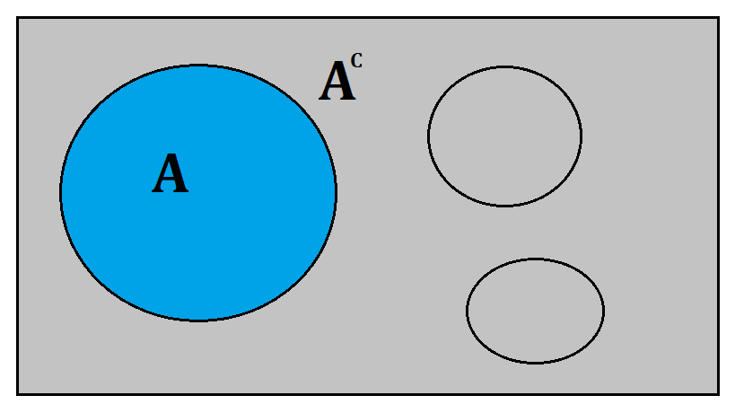

Estadística matemática
La Estadística Matemática estudia de forma más profunda y formal a la Teoría de la Probabilidad, que a la vez está basada en Teoría de la Medida. Este curso sirve como base para Teoría Estadística para un doctorado en Estadística.
En ocasiones se requiere una fuerte formación en Teoría de la Medida, pero en esta página se usarán los conceptos más indispensables para abordar su estudio.
Conceptos básicos¶
Para el estudio de la estadística matemática, se requieren ciertas definiciones que nos permitirán abordar su estudio.
Una definición muy general es el espacio muestral \(\Omega\).
Espacio muestral
Sea \(\Omega\) un conjunto de elementos de interés. \(\Omega\) es llamado Espacio Muestral o Universo.
Usualmente nos referimos a \(\Omega\) como el conjunto de todos los resultados posibles de un experimento, aunque de acuerdo con Shao (1999) tambíen podría ser un conjunto de números, un intervalo de la recta real, entre otros.
Medida
Una medida es una extensión matemática natural de longitud, área o volumen de subconjuntos en espacios Euclideanos de dimensión 1 2 o 3.
Espacios medibles¶
Cuando se trabaja con un espacio muestral, una medida será una función definida para ciertos subconjuntos de \(\Omega\) que satisfagan ciertas propiedades.
\(\sigma\)-álgrebra
Sea \(\mathcal{F}\) una colección de subconjuntos de un espacio muestral \(\Omega\). \(\mathcal{F}\) es llamado una \(\sigma\)-álgebra o \(\sigma\)-campo si y solo si tiene las siguientes propiedades:
- \(\emptyset \in \mathcal{F}\) (El conjunto vacío pertenece a la colección).
- \(A \in \mathcal{F} \rightarrow A^C \in \mathcal{F}\) (Si el conjunto A pertenece a la colección, también su complemento).
- \(A_i \in \mathcal{F},i=1,2,\dots, \rightarrow \cup A_i \in \mathcal{F}\) (La unión también pertenece a la colección).
Variantes en la definición
Algunos autores definen la propiedad 1 como: \(\Omega \in \mathcal{F}\) (El universo pertenece a la colección).
Espacio medible
Un par \((\Omega,\mathcal{F})\) es llamado espacio medible. Los elementos de \(\mathcal{F}\) son llamados eventos en probabilidad y estadística.
El concepto de \(\sigma\)-campo se ilustra con los siguientes ejemplos.
El \(\sigma\)-campo más pequeño
Sea A un conjunto propio no vacío de \(\Omega\), es decir \(A \in \Omega, A \ne \Omega\). ¿Será \(\lbrace \emptyset,A,A^C,\Omega \rbrace\) un \(\sigma\)-campo?
Considere la siguiente imagen

Observese que este conjunto \(\lbrace \emptyset,A,A^C,\Omega \rbrace\) cumple con las 3 propiedades (está el conjunto vacío \(\emptyset\),está su complemento \(A^C\)). De hecho este \(\sigma\)-campo es el más pequeño que contiene a \(A\), ya que cualquier \(\mathcal{F}\) podría contener a \(A\).
Este \(\sigma\)-campo se denota como \(\sigma(\lbrace A \rbrace)\).
El \(\sigma\)-campo finito más grande
Sea \(2^\Omega\) el conjunto potencia, definido como el conjunto de todos los subconjuntos, es el \(\sigma\)-campo más grande para \(\Omega\).
Por ejemplo si se considera \(\Omega = \lbrace 1,2,3,4,5,6 \rbrace\), el conjunto de resultados del lanzamiento de un dado, entonces \(\mathcal{F}=2^\Omega=\lbrace \emptyset,\lbrace 1\rbrace,\lbrace 2\rbrace,\dots,\lbrace 1,2 \rbrace,\dots \lbrace 1,2,3\rbrace,\dots,\lbrace 1,2,3,4,5,6\rbrace \rbrace\) es un \(\sigma\)-campo. Note que \(\mathcal{F}\) tiene 64 elementos.
Conjunto de todos los eventos posibles
En algunos textos de estadística, al conjunto potencia \(2^\Omega\) se le conoce como el conjunto de todos los eventos posibles y se suele denotar como \(\mathbb{s}\).
\(\sigma\)-campo Borel
Sea \(\mathcal{C}\) el conjunto de todos los intervalos abiertos en los números reales \(\mathbb{R}\). Entonces \(\mathcal{B}=\sigma(\mathcal{C})\) es llamado \(\sigma\)-campo Borel y los elementos de \(\mathcal{B}\) son llamados conjuntos Borel.
Considere un intervalo abierto arbitrario, por ejemplo el intervalo \(A=(5,9)\), este intervalo pertenece a \(\mathcal{C}\) y también su complemento, en este caso los intervalos abiertos \((-\infty,5) \cup (9,\infty)\).
Finalmente \(\cup A_i=(-\infty,\infty)\) también está en \(\mathcal{C}\).
Aunque ya se había mencionado anteriormente una idea de medida, a continuación se definirá el concepto de manera formal.
Medida
Sea \((\Omega,\mathcal{F})\) un espacio medible. Una función \(v\) definida sobre \(\mathcal{F}\) es llamada medida si y solo si tiene las siguientes propiedades.
- \(0 \le v(A) \le \infty, A \in \mathcal{F}\).
- \(v(\emptyset) = 0\).
- Si \(A_i \in \mathcal{F}\) y son disjuntos, entonces
\(v \left( \bigcup_{i=1}^{\infty} A_i \right) = \sum_{i=1}^{\infty} v(A_i)\).
En otras palabras, una medida nos permite asignar un número real a los elementos o subconjuntos del espacio muestral.
Espacio de medida
A la tripleta \((\Omega,\mathcal{F},v)\) se le conoce como espacio de medida.
A continuación se definirán algunos ejemplos de medida de especial interés que son usados en estadística.
Medida de probabilidad
Si \(v(\Omega)=1\) entonces \(v\) es llamada una medida de probabilidad y usualmente se denota por \(P\) en vez de \(v\) y la tripleta \((\Omega,\mathcal{F},P)\) es llamada espacio de probabilidad. Note la similitud en la definición que se dió en la sección axiomas de probabilidad (a \(\mathcal{F}\) se le llamó \(\mathbb{s}\)).
Medida de conteo
Sea \(\mathcal{F}\) una colección de subconjuntos de un espacio muestral \(\Omega\). Sea \(v(A)\) el número de elementos en el conjunto \(A \in \mathcal{F}\). Entonces \(v\) es una medida sobre \(\mathcal{F}\) y es llamada medida de conteo.
Esta medida es de utilidad en probabilidad cuando se usa la función de propabilidad con probabilidades iguales.
Medida de Lebesgue
Sea \((\mathbb{R},\mathcal{B})\) un espacio medible (El conjunto de todos los números reales sería el espacio muestral y \(\mathcal{B}\) serían el conjunto de todos los intervalos abiertos en los reales). Se define
\(m([a,b])=b-a\)
para cada intervalo finito \([a,b] \in \mathcal{B},-\infty < a < b < \infty\). A esta medida se le conoce como medida de Lebesgue. Básicamente nos da la longitud del intervalo o distancia ente dos números reales. Note que si \(m\) se restringe al espacio medible \(([0,1],\mathcal{B}_{[0,1]})\), se obtiene una medida de probabilidad.
A continuación se definen algunas propiedades de las medidas.
Propiedades de la medida
Sea \((\Omega,\mathcal{F},v)\) un espacio de medida con \(A \in \mathcal{F}\).
a) Si \(A \subset B\) entonces \(v(A) \le v(B)\) (La medida es monótona).
b) (Subaditividad) Para cualquier secuencia \(A_1, A_2,\dots,\) se cumple
\(v \left( \bigcup_{i=1}^{\infty}A_i\right) = \bigcup_{i=1}^{\infty}v(A_i)\)
c) (Continuidad) Si \(A_1 \supset A_2 \supset \dots\) y \(v(A_1) \le \infty\), entonces
\(v\left( \lim_{n \to \infty} A_n \right) = \lim_{n \to \infty} v \left( A_n \right)\)
Estas propiedades se aplican en las propiedades de la probabilidad, vea la sección axiomas de probabilidad.
Función de probabilidad¶
Ahora se puede definir la función de distribución acumulada a partir de la medida de probabilidad.
Función de distribución acumulada
Sea \(P\) una medida de probabilidad. La función de distribución acumulada de \(P\) se define como
\( F(x) = P(-\infty,x), x \in \mathbb(R) \)
Note que esta definición está en términos de una medida de probabilidad, y no en términos de una variable aleatoria (no lleva el subíndice \(X\)) como en la sección Función de distribución.
Las propiedeades de la función de distribución son las siguientes:
a) \(F(-\infty) = \lim_{x \to -\infty} F(x) = 0\)
b) \(F(\infty) = \lim_{x \to \infty} F(x) = 1\)
c) \(F\) es no decreciente, es decir, para toda \(x < y\) entonces \(F(x) \le F(y)\).
d) Es continua por la derecha, esto es \(\lim_{x < y \to x} F(y) = F(x)\)
Función medible y variable aleatoria¶
Hasta ahora se ha trabajado sobre el espacio muestral \(\Omega\), pero este suele ser algo muy general. Ahora se definirá una forma para trabajar con números reales en lugar de conjuntos.
Función medible
Sean \((\Omega,\mathcal{F})\) y \((\Lambda,\mathcal{G})\) espacios medibles y \(f\) una función de \(\Omega\) a \(\Lambda\). La función \(f\) es llamada función medible de \((\Omega,\mathcal{F})\) a \((\Lambda,\mathcal{G})\) si y solo si \(f^{-1}(\mathcal{G}) \subset \mathcal{F}\).
Variable aleatoria
Si \((\Lambda,\mathcal{G})\) es un espacio Borel, es decir \((\mathbb{R},\mathcal{B})\), a \(f\) se le conoce como función Borel o Borel medible. En probabilidad se le conoce como variable aleatoria.
Para saber un poco más de las variables aleatorias vea la sección variable aleatoria.
Si \(P\) es una medida de probabilidad y \(X\) es una variable aleatoria, entonces a \(P_X=P(X^{-1})\) se le conoce como distribución de X.
Integración¶
El concepto de integración es muy utilizado en Estadística y Probabilidad, aquí se definirá de manera muy general.
Integral
La integral de una función no negativa de una función \(\varphi\) con respectoa \(v\) se define como
\(\int \varphi dv = \sum_{i=1}^{k}a_i v(A_i)\)
Note que este concepto de integración es complejo, ya que involucra funciones Borel \(f\) con respecto a una medida \(v\) y podría considerarse una especie de promedio ponderado de las medidas por unos pesos \(a_i\). A continuación se tratará de ilustrar este concepto mediante unos ejemplos.
Integral de un conjunto contable
Sea \(\Omega\) un conjunto contable, \(\mathcal{F}\) todos los subconjuntos de \(\Omega\) y \(v\) la medida de conteo. Para cualquier función Borel \(f\) la integral con respecto a \(v\) es
\(\int f d v = \sum_{\omega \in \Omega} f(\omega)\)
Básicamente esta integral sumará el número de elementos en el conjunto \(\omega\).
Integral de Riemann
Si \(\Omega = \mathbb{R}\) y \(v\) es la medida de Lebesgue, entonces la integral de \(f\) sobre el intervalo \([a,b]\) coincide con la integral de Riemann de cálculo (la de los rectángulos) y usualmente se denota como
\(\int_{a}^{b}f(x) d x= \int_{a}^{b} f(x) dx\)
Esta integral de Riemman es muy utilizada en Probabilidad y Estadística y es con la que comunmente se trabaja.
La notación de la integral de \(f\) puede ser escrita de varias forma, dependiendo si se requiere indicar los límites de integración o las variables de integración. De hecho en Probabilidad y Estadística, la función de distribución acumulada \(F\) de \(P\) puede expresarse como \(\int f(x) d P\) o \(\int f(x) d F(x)\) o simplemente \(\int f dF\); tambien la esperanza de una variable aleatoria \(X\) podría expresarse como \(E(X)=\int X d P\).
Propiedades de la integral¶
A continuación se presentan las propiedades de la integral, estas propiedades resultarán muy familiares a las que se estudian en Cálculo.
Propiedades de la integral
Sea \((\Omega,\mathcal{F},v)\) un espacio de medida y \(f\) y \(g\) funciones Borel.
i) \(\int a f d v = a \int f d v, a \in \mathbb(R)\) (Linealidad de la integral)
ii) \(\int (f + g) d v = \int f d v + \int g d v\) (Linealidad de la integral)
iii) Si \(f \le g\) entonces \(\int f d v \le \int g d v\)
iv) Si \(f \ge 0\) y \(\int f d v = 0\) entonces \(f = 0\).
A continuación se enuncian algunos teoremas que se ocupan mucho en Estadística y Probabilidad.
Cambio de variable
Sea \(f\) una función medible de \((\Omega,\mathcal{F},v)\) a \((\Lambda,\mathcal{G})\) y \(g\) una función Borel en \((\Lambda,\mathcal{G})\). Entonces
\(\int_{\Omega}g(f)dv=\int_{\Lambda}g d(v(f^{-1}))\)
Note que esta definición es una generalización del cambio de variable de la integral de Riemann \(\int g(y) dy = \int g(f(x))f´(x) dx\), con \(y=f(x)\). A continuación se dará un ejemplo del uso de este teorema.
Una propiedad de la esperanza de X
Esta propiedad es muy usada en Probabilidad y estadística. Sea \(X\) una variable aleatoria en el espacio de probabilidad \((\Omega,\mathcal{F},P)\). Si se define el valor esperado de X como \(E(X)=\int_{\Omega} X dP\), uno puede expresarla en términos de la distribución de X, es decir
\(E(X)=\int_{\mathbb{R}} x d P_X,\)
donde \(P_X=P(X^{-1})\) (integral con respecto a la distribución de X). Usualmente la segunda expresión es la que se encuentra más en los libros de probabilidad, vea por ejemplo la definición de esperanza en la sección Esperanza.
El teorema de cambio de variable también nos permite encontrar la esperanza de una función de \(X\). Sea \(Y\) una variable aleatoria en \((\Omega,\mathcal{F},P)\) y \(g\) una función Borel. La esperanza de \(Z =g(Y)\) puede ser calculada ya sea usando la distribución de \(Y\), es decir, \(E(g(Y))=\int_{\mathbb{R}} g(Y) dP_Y\) o con la distribución de \(g(Y)\), esto es, \(E(g(Y))=\int_{\mathbb{R}} z dP_{g(y)}\). Este resultado tambien puede extenderse al caso de transformaciones de variables aleatorias, por ejemplo la suma de dos variables aleatorias, el cual se estudiará más adelante.
Teorema de Fubini
Sea \(v_1, v_2\) una medida en \((\Omega_1,\mathcal{F}_1)\) y \((\Omega_2,\mathcal{F}_2)\) respectivamente y sea \(f\) una función Borel en \((\Omega_1,\mathcal{F}_1) \times (\Omega_2,\mathcal{F}_2)\) cuya integral con respecto a \(v_1 \times v_2\) existe. Entonces la integral
\(\int_{\Omega_1} f(\omega_1,\omega_2) d v_1\)
existe para \(v_2\) y define una función Borel sobre \(\Omega_2\) cuya integral con respecto a \(v_2\) existe, entonces
\(\int_{\Omega_1 \times \Omega_2} f(\omega_1,\omega_2) d v_1 \times v_2 = \int_{\Omega_2} \left[ \int_{\Omega_1} f(\omega_1,\omega_2) d v_1 \right] d v_2\)
Este teorema es una generalización de lo que usualmente se realiza en cálculo cuando se intercambian los límites de integración.
Intercambio del orden de una suma
Suponga que \(\Omega_1 = \Omega_2 = \lbrace 0,1,2,\dots \rbrace\) y sea \(v_1 = v_2\) la medida de conteo. Sea \(f\) una función sobre \(\Omega_1 \times \Omega_2\) que define una doble secuencia. Entonces
\( \int_{\Omega_1 \times \Omega_2} f d v_1 \times v_2 = \sum_{i=1}^{\infty} \sum_{j=1}^{\infty} f(i,j) = \sum_{j=1}^{\infty} \sum_{i=1}^{\infty} f(i,j)\)
si la integral existe.
Intercambio de límites de integración
En Probabilidad y Estadística se usa la integral doble para hacer el cálculo de probabilidades de una variable aleatoria bivariada. Por ejemplo
\(\int_{\Omega_1 \times \Omega_2} f(x,y) d P_X \times P_Y = \int_{\Omega_2} \left[ \int_{\Omega_1} f(x,y) d P_X \right] d P_Y = \int_{\Omega_1} \left[ \int_{\Omega_2} f(x,y) d P_Y \right] d P_X\)
En secciones posteriores se dará más detalles.
Suma de dos variable aleatorias
Sean \(X_1\) y \(X_2\) variables aleatorias independientes y \(Y = X_1 + X_2\). Muestra que \(F_Y(y) = \int F_{X_2}(y-x)d F_{X_1}(x)\).
Usando la técnica de la función de distribución acumulada (véase Mood et al. (1974)), la función de distribución de \(Y\) puede expresarse como:
Haciendo \(u = y-x_1\)
Aplicando el teorema de Fubini y por independencia
Teorema Radon-Nikodym
Sea \(v\) y \(\lambda\) dos medidas sobre \((\Omega,\mathcal{F})\) y \(v(A) < \infty\). Si \(\lambda\) es absolutamente continua con respecto a \(v\), es decir \(v(A)=0\) implica \(\lambda(A) = 0\), entonces existe una función Borel no negativa \(f\) sobre \(\Omega\) tal que
\(\lambda(A)=\int_{A} f d v, A \in \mathcal{F} \)
es una medida sobre \((\Omega,\mathcal{F})\).
Este resultado puede considerarse como una generalización del teorema fundamental del cálculo ya que \(f\) es llamada la derivada de Radon-Nikodym con respecto a \(v\) y se denota como \(d \lambda / d v\).
A continuación se mencionan algunas propiedades interesantes del Teorema Radon-Nikodym.
Propiedades de la derivada Radon-Nikodym
Sea \((\Omega,\mathcal{F})\) un espacio medible y \(v\) una medida finita en el espacio medible.
i) Si \(\lambda\) es una medida absolutamente continua con respecto a \(v\) y \(f \ge 0\), entonces
\(\int f d \lambda = \int f \frac{d \lambda}{dv}dv\)
ii) Si \(\lambda_1, \lambda_2\) son medidas absolutamente continuas con respecto a \(v\), entonces
\( \frac{d(\lambda_1 + \lambda_2)}{dv} = \frac{d \lambda_1 }{dv} + \frac{d \lambda_2}{dv} \)
iii) (Regla de la cadena) Si \(\tau\) es una medida, \(\lambda\) una medida finita y \(\tau,\lambda\) son medidas absolutamente continuas con respecto a \(v\), entonces
\(\frac{d \tau}{d v}=\frac{d \tau}{d \lambda}\frac{d \lambda}{d v}\)
iv) Sean \((\Omega_1,\mathcal{F}_1,v_1)\) y \((\Omega_2,\mathcal{F}_2,v_2)\) espacios de medida con \(v_1,v_2\) finitas. Sean \(\lambda_1,\lambda_2\) medidas en \((\Omega_1,\mathcal{F}_1,v_1)\) y \((\Omega_2,\mathcal{F}_2,v_2)\) y absolutamente continuas con respecto a \(v_1\) y \(v_2\). Entonces
\(\frac{d(\lambda_1 \times \lambda_2)}{d(v_1 \times v_2)}(\omega_1,\omega_2)=\frac{d\lambda_1}{dv_1}(\omega_1) \frac{d\lambda_2}{dv_2}(\omega_2)\)
Función de densidad
Si \(\int f d v=1\) para una \(f \ge 0\), entonces \(\lambda\) (la función obtenida al realizar la integral) es una medida de probabilidad y \(f\) es llamada su función de densidad o función de densidad de probabilidad con respecto a \(v\).
Sea \(F\) es una función de distribución diferenciable y \(P\) su correspondiente medida de probabilidad. Entonces \(P(A) = \int_{A} f d m, A \in \mathcal{B}\) con \(m\) una medida de Lebesgue en \(\mathbb{R}\). Por lo tanto \(f\) es la función de densidad de \(P\) o \(F\) con respecto a la medida de Lebesgue \(m\); es por eso que en probabilidad y estadística se usen las integrales de cálculo y los cálculo de las probabilidades se expresen de la forma:
\(F(x)=\int_{-\infty}^{x}f(y)dy, x \in \mathbb{R}\)
Para una explicación dede el punto de vista de la probabilidad y ejemplos más detallados, vea la sección función de densidad.
Otra forma de definir la esperanza de X
En (Mood et al., 1974) se define la esperanza o media de \(X\) como
\(E(X)=\int_{0}^{\infty} \left[ 1- F(x) \right] dx - \int_{-\infty}^{0} \left[ F(x) \right] dx\)
Sea \(X\) una variable aleatoria que tiene una función de distribución acumulada \(F\). Se mostrará que si \(X \ge 0\) entonces \(E(X) = \int [1- F(x)] dx\). Se usarán los teoremas vistos hasta ahora para mostrar que se cumple para el caso de una variable aleatoria positiva. El procedimiento para una variable aleatoria que tome valores negativos, es similar.
Considerando que \(X\) es una variable aleatoria positiva, únicamente se toma en cuenta el intervalo de \(0<x<\infty\):
\( E(X) = \int_{0}^{\infty} [1- F(x)] dx \)
Note que \(1-F(x)=1-P(X \le x)=P(X>x)=\int_{x}^{\infty}f(y)dy\), (en este caso \(y\) desaparecerá cuando se evalúen los límites de integración, ya que no es posible poner a \(x\)).
Usando el teorema de Radon-Nikodym la esperanza de \(X\) puede expresarse como:
Ahora, aplicando cambio de variable y el teorema de Fubini, se pueden intercambiar los límites de integración considerando que \(0<x<y<\infty\):
Lo cual prueba el resultado ya que es la definición usual de media de \(X\).
Referencias¶
Mood, A., Graybill, F., & Boes, D. (1974). Introduction to the Theory of Statistics. McGraw-Hill.
Shao, J. (1999). Mathematical statistics. Springer-Verlag.
Muchas de las ideas fueron tomadas del curso Estadísitca Matemática impartido por el Dr. Juan Manuel Romero en Primavera del 2022 en el Colegio de Postgraduados, Campus Montecillo.